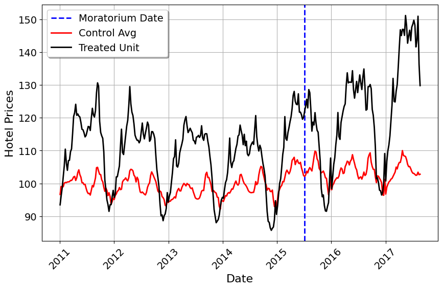

Applying Forward DID to Construction and Tourism Policy
Causal Inference
Machine Learning
Econometrics
Author
Jared Greathouse
Published
February 25, 2025
Causal inference is critical to economics, marketing, policy, and other sectors of industry. Frequently, policies or natural events occur that may affect metrics we care about. In order to maximize our decision making capabilities, understanding the effects of these events we care about is critical so that businseses and governments may plan future business decisions better or know if a policy intervention achieves its intended aims. In absence of A/B tests (randomized controlled trials, which is quite popular amongst marketing firms/other areas of tech), business scientists and policy analysts frequently resort to constructing counterfactuals to infer treatment effecs. This is because conducting proper experiments is difficult, costly, and/or unethical, especially with most of the events we are concerned with which impact millions of people.
Difference-in-Differences (DID) is one of the most popular methods for quasi-experimental designs/treatment effect analysis. DID is simple to compute, and is valid even in settings where we have one treated unit and a single control unit. The key identifying assumption of DID is parallel trends (PTA), or that the trend of the treated group would be constant with respect to the control group had a given intervention or policy never took place. Additionally, PTA posits no-anticipation of the intervention. Various restatements of PTA are common in the econometrics literature, especially under staggered adoption where DID is frequently applied to use cases researchers care about. However, sometimes DID is used even in settings of a single treated unit. And in these settings, PTA may be less likely to hold. This blog post goes over the Forward DID method with an application to the construction/tourism industry.
Barcelona’s Ban on Hotel Construction
Overtourism is an important problem for cities the globe over. Often, a major complaint about massive tourism based economies is that many of the inhabitants may feel they have no neighbors. In response to such complaints, cities such as Venice, Florence, and Rome have enacted or will enact taxes on visitors, or that Amsterdam and even places like Miami Beach have or have considerd enacting a moratorium on new hotel construction. A key question then, for the hotel inndustry, would be “how might this impact demand or the prices of hotel rooms”. For the bigger construction industry, depending on how important hotel construction is to the local economy, one may ask how these policies would affect put in place value, or the total amount built each month.
In July 2015, Barcelona enacted a hotel moratorium which stopped the building of new hotels. The effect this measure had on the normalized prices of hotel rooms was studied in an academic paper. This paper used the synthetic control method, finding a 16 point index increase in the price of hotel rooms. I use their data to demonstrate the Forward DID method, method which may serve as a complement to standard methods such as synthetic controls.
Parallel Trends
Let units be indexed by \(i\) and time by \(t\). Let \(\mathcal{N}\) be the set of all units. Let \(i = 0\) denote the treated unit, and \(\mathcal{N}_0 \coloneqq \mathcal{N} \setminus {0}\) denotes the control group. Further, denote \(\mathcal{U} \subset \mathcal{N}_0\). Parallel trends for DID can be formalized as:
This is the difference between the treated unit, \(y_{0t}\), and the average of the control group, \(y_{\mathcal{N}_0t}\). If parallel trends hold perfectly, this difference would be constant at every time point in the time series. The degree to which this does not hold represents the bias due to violations of parallel trends. Algebraically, we can model this as:
where \(\bar{y}_{\mathcal{N}_0t} = \frac{1}{|\mathcal{N}_0|} \sum_{i \in \mathcal{N}_0} y_{it}\). Here, we know the control group average, so we are estimating only a single parameter, the baseline difference, \(\alpha_{\mathcal{N}_0t}\). This is equivalent to the regression model used in synthetic control, except that the weights for the control units are proportional to the cardinality of the control group.
With Forward DID, we posit that a subset of these units will better satisfy PTA:
One thing we can do to test PTA s to plot the average of control versus the treated unit (in this case, we have block assignment, so we need not worry about staggered adoption).
import pandas as pdimport matplotlib.pyplot as pltimport matplotlibfrom mlsynth.mlsynth import FDIDfrom mlsynth.mlsynth import dataprepimport numpy as npjared_theme = {'axes.grid': True,'grid.linestyle': '-','legend.framealpha': 1,'legend.facecolor': 'white','legend.shadow': True,'legend.fontsize': 14,'legend.title_fontsize': 16,'xtick.labelsize': 14,'ytick.labelsize': 14,'axes.labelsize': 16,'axes.titlesize': 20,'figure.dpi': 100,'figure.figsize': (11, 6)} # Default figure sizematplotlib.rcParams.update(jared_theme)# Load the data into a DataFramedata ='https://raw.githubusercontent.com/jgreathouse9/GSUmetricspolicy/refs/heads/main/data/RawData/HotelPricesRaw.csv'df = pd.read_csv(data, delimiter=',', thousands='.', decimal=',')df.columns = df.columns.str.lower()# Convert 'yyyy_mm_dd' column to datetimedf['yrweek'] = pd.to_datetime(df['yyyy_mm_dd'])# Extract year and week numberdf['year'] = df['yrweek'].dt.yeardf['week'] = df['yrweek'].dt.isocalendar().week# Create a proper weekly date (Monday of the given week)df['yrweek'] = pd.to_datetime(df['year'].astype(str) + df['week'].astype(str) +'1', format='%G%V%u')drop_date = pd.to_datetime('2017-08-21')df = df[df['yrweek'] <= drop_date]df['id'] = df.groupby(['city_id']).ngroup()df["name"] ='Donor'df['fullname'] = df['name'].map(str) +' '+ df['id'].map(str)df.loc[df["is_barcelona"] ==1, "fullname"] ="Barcelona"# Calculate the average of indexed_price by id and yrweekdf = df.groupby(['id', 'yrweek', 'fullname', 'mediterranean'])['indexed_price'].mean().reset_index()df = df.sort_values(by=['id', 'yrweek'])# Define the reference week (2015-W27, which starts on July 6, 2015)moratorium_start = pd.to_datetime("2015-07-06")# Create the 'Moratorium' indicatordf['Moratorium'] = ((df['fullname'] =="Barcelona") & (df['yrweek'] > moratorium_start)).astype(int)df.rename(columns={'indexed_price': 'Hotel Prices', 'yrweek': "Date"}, inplace=True)treat ="Moratorium"outcome ="Hotel Prices"unitid ="fullname"time ="Date"prepdict = dataprep(df, unitid, time, outcome, treat)Nmean = np.mean(prepdict["donor_matrix"],axis=1)y = prepdict["y"]plt.figure(figsize=(10, 6))# Extract the dates from Ywide's indextime_index = prepdict["Ywide"].indexplt.axvline(x=time_index[prepdict["pre_periods"] -1], color="blue", linestyle="--", linewidth=2, label="Moratorium Date")# Plot control average in redplt.plot(time_index, Nmean, color="red", linewidth=2, label="Control Avg")# Plot treated unit in blackplt.plot(time_index, y, color="black", linewidth=2, label="Treated Unit")# Format x-axis labelsplt.xticks(rotation=45)plt.xlabel("Date")plt.ylabel("Hotel Prices")plt.legend()plt.show()

This is the hotel prices of Barcelona (averaged over the week) compared to the average of all 83 control units. Well, what can we take away from this? We can see that Barcelona differs quite a lot from the control group on levels, but what about on trends? Unfortunately, the trends also appear quite dissimilar. Barcelona has higher amplitude compared to the average of controls, as well as slightly higher variance. Thus, using all control units may not be sensible in this case to generate the counterfactual.
The key issue here is “which donors should we pick of the 83 control units”? The data were provided by Booking.com, but the city names had to be masked because of the interest of preserving privacy. So, the most Booking provided the original authors was a single covariate, which indicates whether the city is a donor on the Mediterranean Sea. We could simply use all Mediterranean Donors, on the grounds that these are more likely to be similar to one another. But this is a kind of subjective decision, even if it does make sense conceptually. It’s possible that other non-Mediterranean donors could be an adequate subset of controls too.
The attractive feature of Forward DID is that it uses a forward selection algorithm to choose our controls for us. The DID model is still the same (we can even prove this by estimating it with the standard interaction term setup), the issue is just who comprises the control group. I won’t go into the algorithmic details here, you can read the formalities in my mlsynth code or Kathy Li’s excellent paper which goes into even more details. Strictly speaking (as folks like Pedro Sant’Anna and Kyle Butts have also pointed out to me), the FDID method is justified mainly in the Large \(T\), fixed \(N\) framework (more akin to synthetic controls), so it’s unclear at present how this method would fit within the broader DID literature. But, either way, the Forward DID method is useful because it selects a better control group (assuming it’s parallel trends assumption holds with these controls), and has more straightforward inferential theory than SCM (but this is rapidly changing).
Applying Forward DID
Okay, now how can we use Forward DID? First install the latest version of mlsynth
from IPython.display import Markdownimport pandas as pdresults = {"Metric": ["ATT (Original)", "ATT (Mediterranean)", "R-Squared (Original)", "R-Squared (Mediterranean)", "Weights (Original)", "Weights (Mediterranean)"],"Value": [ arco[0]["FDID"]["Effects"]["ATT"], arcomed[0]["FDID"]["Effects"]["ATT"], arco[0]["FDID"]["Fit"]["R-Squared"], arcomed[0]["FDID"]["Fit"]["R-Squared"],', '.join(set(arco[0]["FDID"]["Weights"].keys())),', '.join(set(arcomed[0]["FDID"]["Weights"].keys())) ]}# Takes the keys of the dictionary and makes them into a set, joined by commasresults_df = pd.DataFrame(results)markdown_table = results_df.to_markdown(index=False)Markdown(markdown_table)
Metric
Value
ATT (Original)
12.989
ATT (Mediterranean)
11.643
R-Squared (Original)
0.853
R-Squared (Mediterranean)
0.859
Weights (Original)
Donor 40, Donor 82, Donor 81, Donor 30, Donor 80
Weights (Mediterranean)
Donor 40, Donor 6, Donor 82, Donor 81, Donor 30
Well, we see that these DID models do pretty well (by comparison, even with the Mediterranean donor pool, DID does not do nearly as well without the regularization of the forward selection algorithm). We also see that regardless of who I use as controls, the models agree that Donors 30, 40, 81, and 82 were among the most important control units in the entire universe of controls provided to us. Now, we do not know who these donors are, but the point is that we now have, with Forward DID, a method by which we can choose our control group for treated units. By comparison, when we use the \(\ell_2\) relaxer, we get an ATT of 10.95 and an \(R^2=0.883\) for the case of all donors. When we use only Mediterranean donors, we get an ATT of 12.75 and an \(R^2=0.911\). The point of this is that by using advanced quasi-experimental methods, we can uncover causal impacts that we could not otherwise by simply doing a \(t\)-test; we can mitigate overfitting and judiciously weigh our control group to have a better sense of what might have been absent the treatment.
The main insight here is that the prices were raised by around 12 index points compared to what they would have been absent the policy intervention. It would be super cool to see what actually happened to demand for hotel rooms and so on, but the data do not afford us that luxury.
Business Use Cases
When might these be useful in business science such as construction or in tourism? Well for one, lots ofstates have passed laws regarding heat safety for workers which restrict local areas from passing laws which would provide workers with water, shade, and rest in the hot summer months. We can use these techniques to see how such laws/policies affect labor or safety. We can use causal inference to estimate the impact of events that are meant to affect the demand for tourism or other KPIs the tourism industry cares about. For construction, the physical building of construction units could be affected by these kind of policies, impacting metrics like put-in-place value or project stress indices. On the supply side, we may quantify the effects of policies such as tariffs on the costs of materials. With proper causal infernece, firms and policymakers may plan more effectively, knowing whether to pursue current policies or not, and take action with scientifically based analysis.